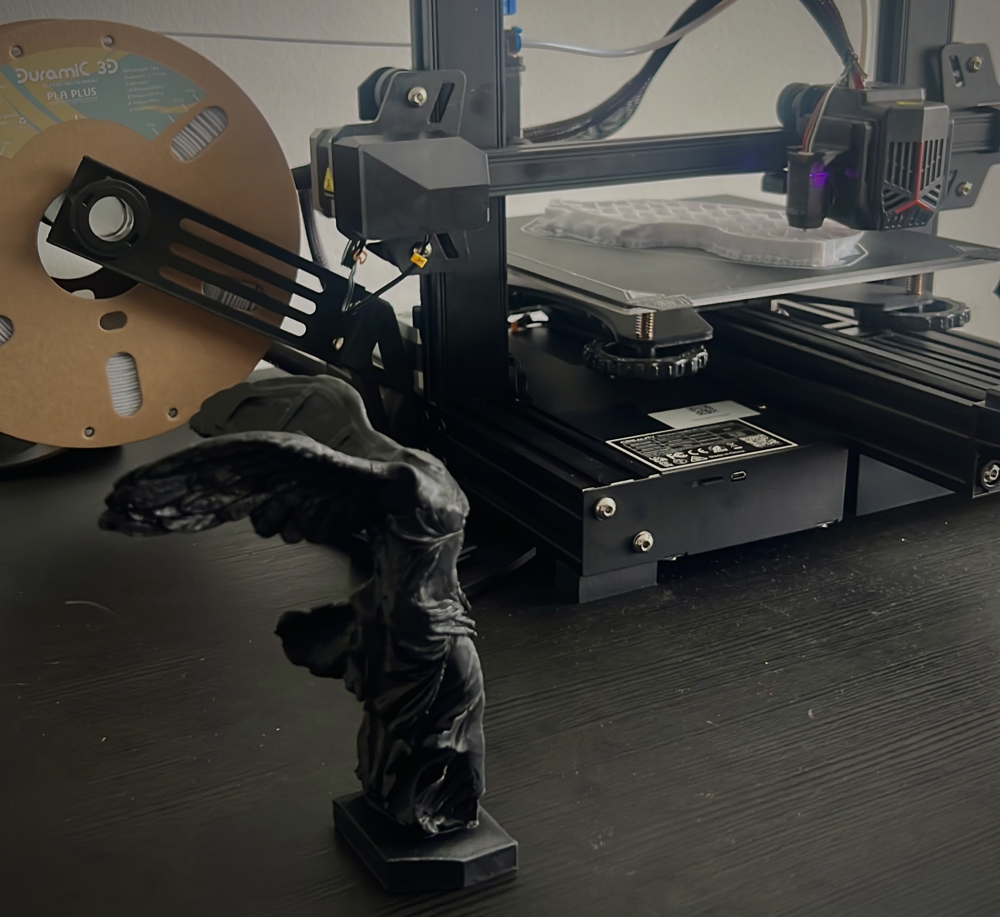

Part 1: Learning The Basics

Like any other of my projects I started with learning the fundamentals of 3D Printing. I took courses on how to use slicers, industry best practices, recommended procedures, and so much more. After about a week I was able to go from a CAD model to final print with no print failures, defects or abnormalities. I also completely disassembled my Ender 3 V2 Neo, rewiring the harnesses for higher mobility, upgraded the driver boards to allow for silent use of the stepper motors during high speed accelerations, modeled a bracket to shift the spool so that it feeds directly into the extruder rather than curve around the z-frame causing inaccuracy in retractions.
Part 2: Finding The OEM Limit
After printing one of my favorite statues successfully I decided to print all of my favorite statues including The Statue of David, Statue Moitié de Visage, Venus de Milo, and The Monument of Leonidas. This is were the limitations of my printer started to become apparent.
Statues are interesting to print as they pose unique challenges to printing and stress FDM printer's abilities to their absolute limit. Most models in engineering projects have flat surfaces and fixed angles that any cheap 3D printer can make, however statues have slopping edges, fine details, they also often have both under and over hangs and always cover a massive printing surface. This made me realize that to reliably print my favorite monuments I would require accurate alignment of the axes, perfectly tuned overhang parameters, perfect plate adhesion, leveling, and thermal management. I also had to account for fine peaks curving upwards due to thermal expansion and colliding with the printing head.
So began the journey of fine tuning and perfecting my printer. First came the simple hardware tweaks like realigning the axes with a laser guide, changing the heating element, and changing to a crystal tip nozzle. Then I quickly realized that the hardware modifications were not enough to get the quality of prints I wanted and many of the settings I wanted to change were simply not available for my printer or limited by the OEM.
Part 3: Making A Better Firmware
So I began my search for a custom firmware for the Ender 3, and soon I found Miguel Risco-Castillo's Ender 3 V2 / S1 firmware. It provided a solid base, being a fork of the original Creality firmware with added flexibility of settings, and the ability to write and adapt features from other Marlin based firmwares. The only issue was that it was written and compiled for the V2 not my V2 Neo model. Given that I am well versed in C++, so I started rewriting the firmware with added support to features I needed.
First I added support for my printers CR-Touch module which allowed me to implement auto mesh bed leveling and tramming. Then I unlocked the ability to tune the PID parameters of the newly upgraded heating element. I also added model predictive temperature control, which in combination with the well tuned PID control mitigated the thermal expansion issue that caused the printer head to crash into small peaks. All these added features mitigated many of my problems when printing high detailed prints. As I was writing the firmware for the motherboard, I elected to change the firmware for the display as well. This allowed me to have some quality of life upgrades like UI shortcuts, savable profiles, mid-print pausing, and a leveling z-height map for the print bed.
And with that my printer was back up and running and operating better than ever, and has printed hundred of prints so far ranging from camera hood lenses and laptop stands to V8 engine models and a Trinity Project prototype scale model. If you would like to take a look at my firmware feel free to check out my github repo below. It is fully open source so feel free to try it out and send me any feedback.